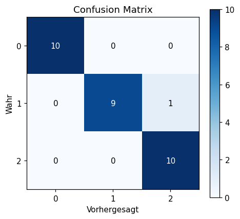
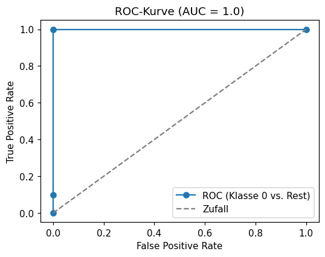

Selbst programmieren
Lies die Aufgabenstellung und vergleiche dein Ziel mit der „Erwarteten Ausgabe“.
Schreibe deine Lösung dann selbst im freien Code-Bereich,
der per Klick auf „▶ Code ausführen“ echtes Python (Pyodide, inkl. numpy/pandas/scikit-learn)
im Browser ausführt. Erst danach die Musterlösung aufklappen.
Alle Aufgaben nutzen eine LogisticRegression auf dem iris-Datensatz.
🔢 Confusion Matrix berechnen
LeichtBerechne die Confusion Matrix für die Vorhersagen einer LogisticRegression auf dem Iris-Testset.
- Nutze
confusion_matrix(y_test, y_pred)aussklearn.metrics. - Gib die Matrix aus.
- Welche Klasse(n) werden perfekt erkannt, wo gibt es Verwechslungen?
[[10 0 0] [ 0 9 1] [ 0 0 10]]
💡 Musterlösung anzeigen
Zeile i = wahre Klasse i, Spalte j = vorhergesagte Klasse
j. Die Diagonale enthält die korrekten Vorhersagen. Klasse 0 (Setosa) und Klasse 2
(Virginica) werden mit 10/10 perfekt erkannt. Bei Klasse 1 (Versicolor) wird 1 von 10
Samples fälschlich als Klasse 2 vorhergesagt (Eintrag cm[1,2]=1) — diese beiden Arten
sind sich am ähnlichsten.
from sklearn.metrics import confusion_matrix
cm = confusion_matrix(y_test, y_pred)
print(cm)[[10 0 0] [ 0 9 1] [ 0 0 10]]
Eine Heatmap macht die Confusion Matrix auf einen Blick lesbar: die helle Diagonale zeigt die korrekten Vorhersagen (10, 9, 10), das einzige dunklere Off-Diagonal-Feld bei Zeile 1 / Spalte 2 ist genau der eine Versicolor-Punkt, der fälschlich als Virginica vorhergesagt wurde. Bei größeren Klassenzahlen ist eine solche Heatmap deutlich übersichtlicher als eine reine Zahlenmatrix.
import matplotlib.pyplot as plt
cm = confusion_matrix(y_test, y_pred)
fig, ax = plt.subplots(figsize=(4.5, 4))
im = ax.imshow(cm, cmap='Blues')
for i in range(3):
for j in range(3):
ax.text(j, i, cm[i, j], ha='center', va='center',
color='white' if cm[i, j] > cm.max()/2 else 'black')
ax.set_xticks([0,1,2]); ax.set_yticks([0,1,2])
ax.set_xlabel("Vorhergesagt"); ax.set_ylabel("Wahr")
ax.set_title("Confusion Matrix")
fig.colorbar(im)
plt.show()
📈 ROC-Kurve & AUC (binär)
MittelBerechne ROC-Kurve und AUC für die binäre Frage „ist es Klasse 0 (Setosa) oder nicht?“.
- Erzeuge
y_test_bin = (y_test == 0).astype(int). - Hole die Wahrscheinlichkeiten für Klasse 0 mit
clf.predict_proba(X_test)[:, 0]. - Berechne
roc_auc_score(3 Nachkommastellen) sowiefpr, tprmitroc_curve(jeweils 3 Nachkommastellen).
AUC: 1.0 FPR: [0. 0. 0. 1.] TPR: [0. 0.1 1. 1. ]
💡 Musterlösung anzeigen
Die ROC-Kurve trägt für verschiedene Entscheidungsschwellen die True-Positive-Rate (TPR, y-Achse) gegen die False-Positive-Rate (FPR, x-Achse) auf. Eine AUC von 1.0 bedeutet: es gibt eine Schwelle, bei der alle Setosa-Punkte höhere Wahrscheinlichkeit bekommen als alle Nicht-Setosa-Punkte — perfekte Trennung. Geometrisch verläuft die Kurve direkt über die linke obere Ecke (FPR=0, TPR=1), bevor sie zum Punkt (1,1) springt.
from sklearn.metrics import roc_auc_score, roc_curve
y_test_bin = (y_test == 0).astype(int)
y_score = clf.predict_proba(X_test)[:, 0]
auc = roc_auc_score(y_test_bin, y_score)
print("AUC:", round(auc, 3))
fpr, tpr, thresholds = roc_curve(y_test_bin, y_score)
print("FPR:", np.round(fpr, 3))
print("TPR:", np.round(tpr, 3))AUC: 1.0 FPR: [0. 0. 0. 1.] TPR: [0. 0.1 1. 1. ]
⚖️ Precision, Recall & F1-Score
MittelBerechne Precision, Recall und F1-Score — einmal pro Klasse und einmal als Makro-Durchschnitt.
- Berechne
precision_score,recall_score,f1_scoremitaverage='macro'(3 Nachkommastellen). - Berechne dieselben Metriken mit
average=None, um die Werte je Klasse zu erhalten (3 Nachkommastellen).
Precision (macro): 0.97 Recall (macro): 0.967 F1 (macro): 0.967 Precision per class: [1. 1. 0.909] Recall per class: [1. 0.9 1. ]
💡 Musterlösung anzeigen
Precision = „von allen als Klasse X vorhergesagten, wie viele waren wirklich X?“,
Recall = „von allen wirklich X, wie viele wurden auch als X erkannt?“. Klasse 2
hat Precision 0.909, weil sie 1 Sample fälschlich von Klasse 1 „bekommt“ (10 Vorhersagen für Klasse 2,
aber nur 9 davon korrekt → 10/11 ≈ 0.909). Klasse 1 hat Recall 0.9, weil 1 von 10
echten Klasse-1-Samples als Klasse 2 vorhergesagt wurde. average='macro' bildet
einfach den ungewichteten Mittelwert über die 3 Klassen.
from sklearn.metrics import precision_score, recall_score, f1_score
print("Precision (macro):", round(precision_score(y_test, y_pred, average='macro'), 3))
print("Recall (macro):", round(recall_score(y_test, y_pred, average='macro'), 3))
print("F1 (macro):", round(f1_score(y_test, y_pred, average='macro'), 3))
print("Precision per class:", np.round(precision_score(y_test, y_pred, average=None), 3))
print("Recall per class:", np.round(recall_score(y_test, y_pred, average=None), 3))Precision (macro): 0.97 Recall (macro): 0.967 F1 (macro): 0.967 Precision per class: [1. 1. 0.909] Recall per class: [1. 0.9 1. ]
🔄 Cross-Validation: Schwankung über Folds
MittelBewerte die LogisticRegression mit 5-facher Cross-Validation und analysiere die Schwankung.
- Nutze
cross_val_score(clf, X, y, cv=5, scoring='accuracy')auf dem gesamten DatensatzX, y. - Gib die 5 Scores, ihren Mittelwert und ihre Standardabweichung aus (jeweils 3 Nachkommastellen).
- Vergleiche die Standardabweichung mit der Schwankung, die ein einzelner Train-Test-Split verursachen könnte.
Scores: [0.967 1. 0.933 0.967 1. ] Mean: 0.973 Std: 0.025
💡 Musterlösung anzeigen
Die einzelnen Fold-Scores schwanken zwischen 0.933 und 1.0 —
ein Unterschied von 6.7 Prozentpunkten allein durch die Wahl, welche 30 Samples im Test-Set landen!
Ein einzelner Train-Test-Split (wie in den vorigen Aufgaben mit test_size=0.2) liefert
also nur eine Stichprobe aus dieser Verteilung — der Mittelwert über 5 Folds
(0.973) und die Standardabweichung (0.025) geben ein realistischeres Bild der erwarteten
Modellgüte und deren Unsicherheit.
from sklearn.model_selection import cross_val_score
scores = cross_val_score(clf, X, y, cv=5, scoring='accuracy')
print("Scores:", np.round(scores, 3))
print("Mean:", round(scores.mean(), 3))
print("Std:", round(scores.std(), 3))Scores: [0.967 1. 0.933 0.967 1. ] Mean: 0.973 Std: 0.025
🔍 Fehleranalyse: welche Samples werden falsch klassifiziert?
SchwerFinde die konkreten Testpunkte, die von der LogisticRegression falsch klassifiziert werden.
- Vergleiche
y_testundy_predelementweise und finde die Indizes, an denen sie sich unterscheiden (np.where). - Gib diese Indizes sowie die wahren und vorhergesagten Labels an diesen Stellen aus.
- Gib aus, wie viele von 30 Testpunkten falsch klassifiziert wurden.
Falsch klassifizierte Indizes: [25] Wahre Labels: [1] Vorhergesagte Labels: [2] Anzahl Fehler: 1 von 30
💡 Musterlösung anzeigen
np.where(y_test != y_pred) liefert genau die Indizes, an denen sich Wahrheit und
Vorhersage unterscheiden — hier ist es ein einziger Testpunkt (Index 25), der
eigentlich Klasse 1 (Versicolor) ist, aber als Klasse 2 (Virginica) vorhergesagt wurde. Das passt
genau zu dem Eintrag cm[1,2]=1 aus der Confusion Matrix in Aufgabe 1 — diese Art der
Fehleranalyse hilft, gezielt einzelne „schwierige“ Beispiele genauer zu untersuchen (z.B. liegt der
Punkt nahe an der Entscheidungsgrenze zwischen zwei Arten).
wrong = np.where(y_test != y_pred)[0]
print("Falsch klassifizierte Indizes:", wrong)
print("Wahre Labels:", y_test[wrong])
print("Vorhergesagte Labels:", y_pred[wrong])
print("Anzahl Fehler:", len(wrong), "von", len(y_test))Falsch klassifizierte Indizes: [25] Wahre Labels: [1] Vorhergesagte Labels: [2] Anzahl Fehler: 1 von 30
📈 ROC-Kurve plotten
MittelZeichne die ROC-Kurve aus Aufgabe 2 (Setosa vs. Rest) als Plot.
- Berechne wie in Aufgabe 2
y_test_bin,y_scoreundfpr, tprmitroc_curve. - Plotte
fprgegentprmit Markern. - Zeichne zusätzlich eine gestrichelte Diagonale von (0,0) nach (1,1) als „Zufalls“-Referenzlinie.
- Beschrifte die Achsen mit „False Positive Rate“ / „True Positive Rate“ und füge eine Legende hinzu.
Eine Kurve, die von (0,0) direkt zu (0,1) und dann zu (1,1) verläuft (perfekte Trennung, AUC=1.0), plus eine gestrichelte Diagonale als Referenz für ein zufälliges Modell.

💡 Musterlösung anzeigen
Die ROC-Kurve verläuft hier direkt über die linke obere Ecke (FPR=0, TPR=1) — das ist die geometrische Entsprechung von AUC=1.0 aus Aufgabe 2: es gibt eine Schwelle, bei der alle Setosa-Punkte eine höhere TPR erreichen, ohne dass irgendein Nicht-Setosa-Punkt fälschlich positiv klassifiziert wird (FPR=0). Die gestrichelte Diagonale zeigt, wie ein Modell aussehen würde, das nur rät — je weiter die echte Kurve oben links davon liegt, desto besser das Modell.
import matplotlib.pyplot as plt
fpr, tpr, _ = roc_curve(y_test_bin, y_score)
plt.plot(fpr, tpr, marker='o', label='ROC (Klasse 0 vs. Rest)')
plt.plot([0, 1], [0, 1], '--', color='gray', label='Zufall')
plt.xlabel("False Positive Rate"); plt.ylabel("True Positive Rate")
plt.title("ROC-Kurve (AUC = 1.0)")
plt.legend()
plt.show()